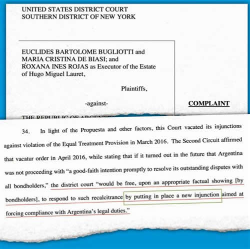

Real Chubut - Agencia de Noticias


Nuevos bonistas intentan frenar acuerdo con buitres

• "EL JUICIO DEL SIGLO" EN NUEVA YORK SE RESISTE A TERMINAR
Tres tenedores de bonos en default desde 2001 acusan ahora a Argentina por “discriminación” y “mal trato”. Define la jueza Loretta Preska, que reemplazó a Thomas Griesa.
El "Juicio del Siglo" entre Argentina y los fondos buitres en los tribunales de Nueva York se niega a terminar. Incluso podría tener un nuevo, y complicado capítulo: el de los bonistas que no ingresaron al canje propuesto por el país el año pasado y que terminó con una negociación global en abril de 2016; y que ahora se consideran "perjudicados" por la manera en que se discutió en acuerdo con los bonistas más importantes. Tres de estos acreedores aún en default, se presentaron ayer ante el tribunal de la jueza Loretta Preska (la magistrada que "heredó" el caso luego del traspaso voluntario de Thomas Griesa de marzo pasado); y reclamaron que se "repongan las medidas cautelares contra la República Argentina". En total, estos bonistas representan deuda impaga desde diciembre de 2001 por unos u$s36,1 millones; de un total de u$s500 millones que, se estima, aún está fuera de los acuerdos cerrados por Argentina y los principales fondos buitre.
Los bonistas que se presentaron ante Preska son todos inversores locales: Euclides Bartolomé Bugliotti, María Cristina de Biasi y Roxana Inés Rojas. Los tres forman parte del listado tradicional de bonistas que nunca aceptaron la propuesta argentina presentada a comienzos del Gobierno de Mauricio Macri; y siempre reclamaron el 100% de la deuda más los intereses al contado. La oferta oficial presentada el primero de marzo de 2016 (una quita directa del 25% del total adeudado: capital más intereses); fue inmediatamente aceptada ya por el 98% de los acreedores, incluyendo los fondos buitre más complicados. Hacia mayo de ese año sólo quedaban afuera un 1% del total adeudado, representativos de unos 1.000 millones de dólares; los que, hasta acá, se negaron a aceptar la propuesta y continuaron siendo rechazados por Griesa primero y Preska después.
La novedad de la presentación de ayer, es que cambió la fórmula jurídica del planteo. Según los tres bonistas, el perjuicio en el que habrían incurrido los negociadores locales en el primer trimestre de 2016, fue que el país no negoció "en buenos términos", incluyendo acciones "discriminatorias". Preska deberá definir si le da o no lugar a este reclamo diferente, que, de prosperar, sólo alcanzaría a los bonistas que no firmaron el acuerdo.
Hay otro grupo de disconforme, más allá de estos tres reclamantes, y que aún porfían ante Preska. Son bonistas individuales o fondos que agrupan a personas, que están también desacuerdo porque deben hacerse cargo de los honorarios de los abogados litigantes, dinero que se les descuenta de las eventuales liquidaciones que recibirían en el caso de terminar aceptando la oferta argentina. Según el razonamiento que hacen estos bonistas, el Gobierno de Mauricio Macri propuso un cobro de 1,5 dólares por cada dólar de los bonos caídos en default, pero descontando lo que se le debe pagar a los abogados representantes le quedarían finalmente unos 0,8 dólares. Mencionan los bonistas en protesta que los 1,5 dólares es lo que efectivamente cobraron Elliot de Paul Singer, Kenneth Dart. Olifant, Aurelius y el resto de los fondos buitre que representaban el 80% de la deuda en el juicio; y cuyos abogados cobraron cifras megamillonarias pero que superaban el 0,2% del total adeudado.
La aceptación por parte de la Argentina de liquidarles a los abogados de los principales acreedores unos u$s150 millones en concepto de honorarios de abogados (le correspondía por haber perdido el juicio), más el plus que los propios fondos le pagaron a los profesionales por su tarea más allá de lo determinado en su momento por Griesa (se supone que superaron los u$s400 millones); no corre para los pequeños demandantes. Estos, al no aceptar la oferta inicial y continuar litigando, perdieron el derecho de la liquidación de honorarios de sus abogados por parte de la Argentina según determinó en su momento Griesa; tendrían que hacerse cargo ellos mismos de estos costos.
El volumen del juicio y el hecho de tener sus propios abogados, es lo que hizo reducir el monto a liquidar desde los grandes fondos buitre a los abogados. Diferente es el caso de los pequeños acreedores, que al no tener el peso de sus primos más importantes pero ante la necesidad de contratar abogados que tengan experiencia en este tipo de negociaciones complejas, deben compartir la ganancia con los profesionales que los representen ante la Justicia norteamericana.
El reclamo fue presentado ante Preska el 27 de septiembre pasado, y la jueza les presentó el mecanismo de cálculo para determinar el volumen de los honorarios a liquidar (ver cuadro adjunto), lo que hizo que los acreedores se enardecieran y profundicen su malhumor contra la propuesta y, en consecuencia, continúen en su negativa a aceptar la oferta que llevó en su momento como secretario de Finanzas, Luis Caputo a Nueva York.
La negativa de los acreedores a cerrar el trato y, definitivamente, terminar con la causa; provocó incluso peleas entre los abogados de diferentes tenedores de bonos, ya que algunos accedían a bajar sus honorarios, mientras que otros se mantenían firmes en lo que calculaba Preska.
La jueza deberá definir también la compulsa. Para esto Preska ya le avisó a alguno de los fondos rebeldes, (entre otros el HWB Victoria Strategies Portfolio, Drawrah Limited, NW Global Strategy, Schmidt y el U.V.A. Vaduz) a que se apresten a aceptar su decisión; o, eventualmente, apelar ante la segunda instancia.
Hay una tercera demanda residual en el "Juicio del Siglo". Preska todavía tiene que responder por las acusaciones a la agencia de clearing Euroclear, que los juicios paralelos por las responsabilidades por no pagar en su momento las ordenes de Griesa en los tiempos en que la pelea la llevaba adelante el Gobierno de Cristina de Kirchner con Axel Kicillof como ministro de Economía. Euroclear, junto con Clearstream (la otra agencia de custodia de pagos de la deuda externa que tenía contratada la Argentina antes del default) apoyaron la operación de liquidación de los vencimientos de los títulos públicos del país en Buenos Aires. El problema surgió en marzo de 2015 cuando Griesa ordenó a Euroclear a retener cualquier pago de bonos reestructurados de la deuda argentina, buscando forzar en esos momentos al Gobierno de Cristina Fernández de Kirchner a firmar un acuerdo con los acreedores respetando su fallo que le daba la razón a Elliott, Dart, Aurelius, Olifant y el resto de los fondos que le habían hecho juicio al país.
Fuente: Ambito